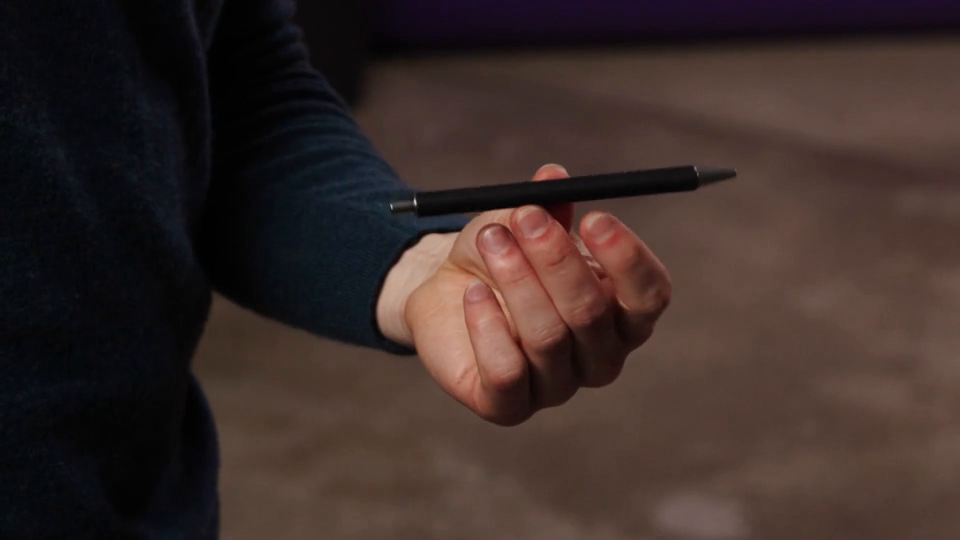
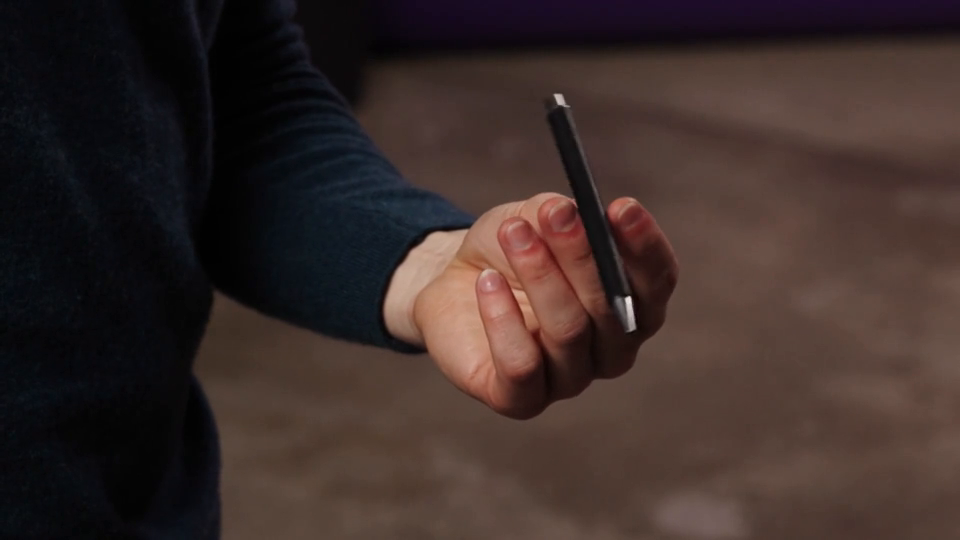
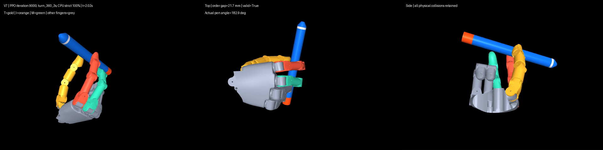
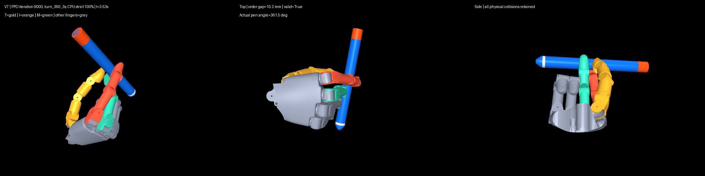

真人 Triangle Pass 参考 A
参考
已批准的 3 秒单视角参考。与机器人视频未做时间或相位对齐；遮挡处接触未知。
第 9000 轮预选模型在原 v7 最终未见集为 24/24；独立接触审计发现仅按指尖传感区域计数时双接触只有 75.0%–78.2%，因此指腹位置与动作自然性仍待审阅。未启动 60 秒训练。
参考
已批准的 3 秒单视角参考。与机器人视频未做时间或相位对齐；遮挡处接触未知。
待审阅
闭环策略同步三视角；原 v7 物理门槛 24/24。中指末节本体承力与真实指腹交接待人审，不能称自然动作已通过。
仅诊断
用于训练期间选定候选的固定验证视频；原 v7 门槛 24/24。与最终未见集分开报告。
仅诊断
原 v7 门槛 23/24；第 23 回合提前结束，伴随接触、漂移、自穿透与回夹失败。不可凭此结果反向选模。



